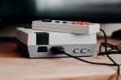

Hobby's en interesses
| Muziek |
Muziek zegt soms meer dan woorden en is een taal die iedereen ter wereld begrijpt. Een leven zonder muziek kan ik mij dus moeilijk voorstellen. Ik heb een nogal 'eclectische' muzieksmaak maar toch zal je in mijn spotify-playlists voornamelijk genres zoals punk, rock, punk rock, Nu-Metal, Hardcore metal,... terugvinden. In de zomer kan je me dan ook regelmatig terugvinden op een muziekfestival. Zelf speel ik ondertussen 3 jaar saxofoon. Er is niets leuker dan samen met andere muzikanten muziek te maken en/of uit te voeren. |
 |
|---|---|---|
| Sport & Gezondheid |
Mens sana in corpore sano Een sporter op topniveau ben ik niet, maar ik probeer deze stelling toch enigszins te respecteren. Een uurtje in de fitness (liefst krachttraining), een sessie Bodypump of een rondje joggen zijn bij uitstek mijn favorieten. Ik sta er ook nog steeds van versteld hoe een doodgewone wandeling in de natuur wonderen kan doen om mentaal tot rust te komen. |
|
| Familie & Vrienden |
Familie en vrienden spelen een belangrijke rol in mijn leven, dus maak ik hier graag de nodige tijd voor vrij. | |
| TV-series | Als ik moet kiezen tussen een film of TV-serie, gaat mijn voorkeur uit naar een TV-serie. Mijn topfavorieten zijn humoristische series zoals The Big Bang Theory, The IT Crowd of een BBC-klassieker (Blackadder, Fawlty Towers, ...). Voor classic cartoons zoals Tom & Jerry of animatieseries zoals Bless The Hart laat ik de TV ook aanstaan. | |
| Games | Ik kom er niet vaak aan toe maar eens ik ben begonnen, ben ik niet meestal niet meer te stoppen. Het liefst speel ik retrogames en ik ben vooral fan van Nintendo 2D-platformers. |  |